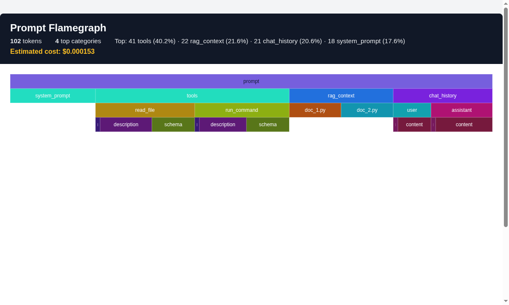

Visual token breakdown
Turn a structured prompt into an interactive HTML flamegraph and spot which category eats the budget.
Lightweight, zero-dependency Python package to profile prompts with interactive flamegraphs, token-waste detection, prompt diffs and HTML/SVG/Markdown/terminal exports.
pip install prompt-flamegraph
Hover over the bars to see how tokens are distributed across system prompt, tools, RAG context and chat history.
A focused tool for a real problem: prompt tokens are expensive, opaque and easy to waste.
Turn a structured prompt into an interactive HTML flamegraph and spot which category eats the budget.
Find duplicate text, oversized RAG context, long chat history and too many tools before calling the API.
Compare two prompt versions and visualize added, removed and changed tokens.
Export to HTML, SVG, Markdown or a colored terminal bar chart.
Pure Python, no server, no dashboard, no telemetry. Optional tiktoken and rich extras.
One function call in Python or a single command in your terminal.
Install it, call one function, open the HTML report.
from prompt_flamegraph import profile_prompt
prompt = {
"system_prompt": "You are a helpful coding assistant.",
"tools": ["..."],
"rag_context": {"doc_1": "..."},
"chat_history": ["..."],
}
profile_prompt(prompt, output="context.html")$ prompt-flamegraph prompt.json -o context.html --cost 1.5e-6 $ prompt-flamegraph prompt.json --terminal $ prompt-flamegraph v1.json --diff v2.json -o diff.html $ prompt-flamegraph --demo --cost 1.5e-6
Get a WasteReport with concrete findings before sending the prompt to an API.
Wasted: 26 / 88 tokens (29.5%)
- duplicate: 3x duplicate text ('def helper(): return 'value' ') — keep only one
- duplicate: 5x duplicate text ('Hi!') — keep only one
- too_many_tools: 6 tools defined — only declare the ones the model actually calls

Package, source, article and companion project.